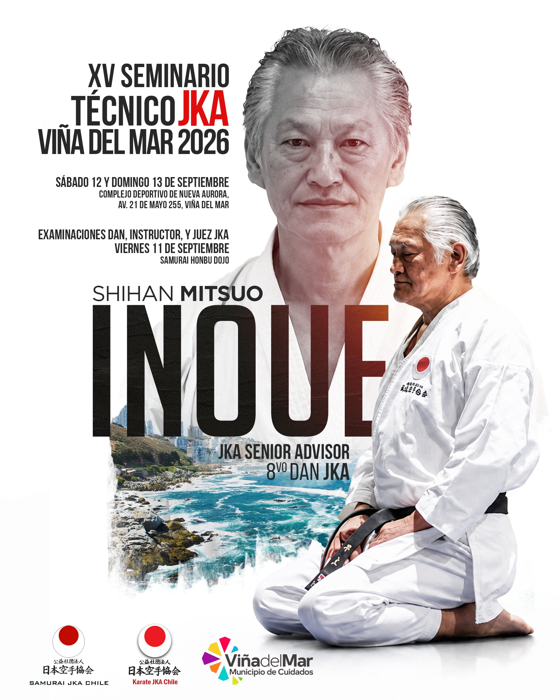

🔥 DESTACADO JKA 2026
JKA CHILE 2026

📜 Eventos¡Todo listo para el XV Seminario Técnico JKA Viña del Mar 2026 junto a Shihan Mitsuo Inoue!
Confirmada la fecha para el magno evento del Karate JKA con la presencia del maestro Shihan Mitsuo Inoue (8° Dan JKA y Senior Advisor). Exámenes de Dan, Instructor y Juez.